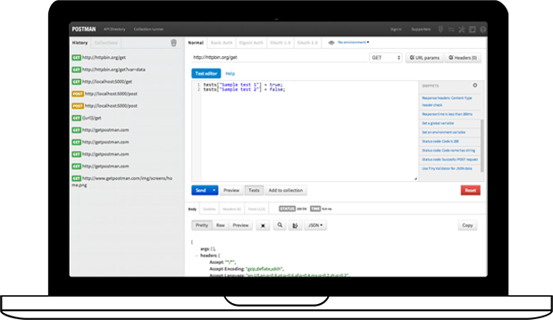

Nodejs最新技术栈
Nodejs是比较简单的，只有你有前端js基础，那就按照我的办法来吧！一周足矣
Abount Me
i5ting 一个开源爱好者

Node全栈公众号
什么是全栈？一直站在前面讲么？

Part 1：http基础
了解http协议，尤其是express如何req
curl -d "a=1&b=2" http://127.0.0.1:3001/users/post如果还不懂http协议?
花点时间会用个软件就能学会，有兴趣吗？推荐Postman 
如果还还不懂http协议?
看书吧推荐1 《HTTP下午茶》
推荐2 《图解HTTP》
Part 2：db相关
MEAN
Part 3：Promise/A+规范
A promise is defined as an object that has a function as the value for the property then: then(fulfilledHandler, errorHandler, progressHandler)
http://promisesaplus.com/Part 4：tdd/bdd测试
朴灵说：“不写测试的项目都不是好项目”
常用测试模块
1. mocha
2. chai（Chai is a BDD / TDD assertion library for node and the browser that can be delightfully paired with any javascript testing framework.
3. sinon（Standalone test spies, stubs and mocks for JavaScript.）
4. zombie (页面事件模拟Zombie.js is a lightweight framework for testing client-side JavaScript code in a simulated environment. No browser required.)
5. supertest(接口测试 Super-agent driven library for testing node.js HTTP servers using a fluent API)
Part 5：调试

可视化界面

招聘Nodejs工程师, 我亲自带
目标全栈天津，管吃住，工资和北京持平，有机会拿到天津户口，股票期权
Q & A
少抱怨，多思考，未来更美好。有的时候我看的不是你一时的能力，而是你面对世界的态度。

console.log('The End, Thanks~')